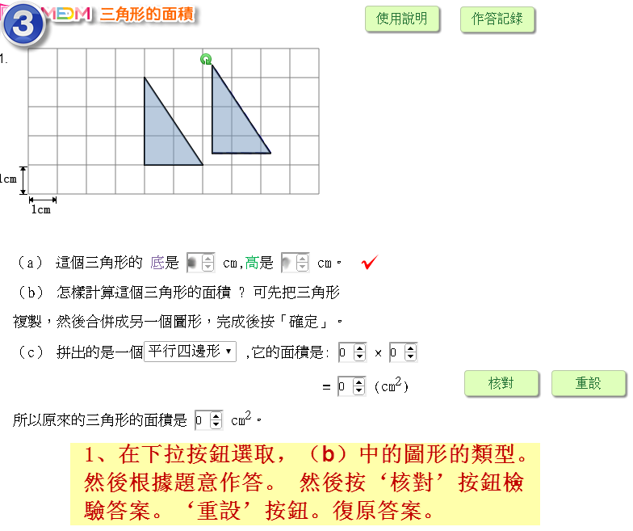
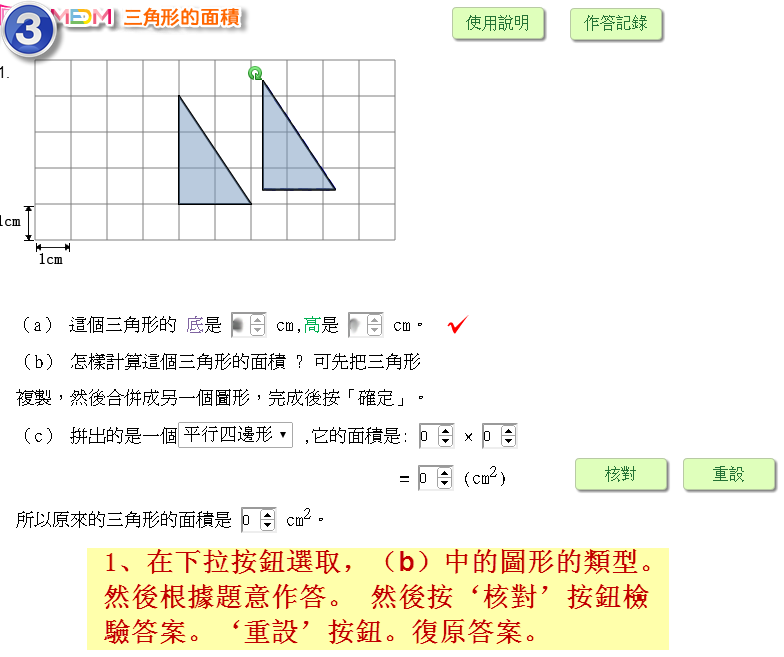

（a）這個三角形的 底 是 2 cm，高 是 3 cm。
（b）見左圖。
（c） 拼出的是一個 平行四邊形，它的面積是:3 × 2 = 6（cm2）,所以原來的三角形的面積是 3 cm2。
（a） 這個三角形的 底 是 4 cm，高 是 2 cm。
（c） 拼出的是一個 平行四邊形，它的面積是:2 × 4 = 8 （cm2）,所以原來的三角形的面積是 4 cm2。
（a） 這個三角形的 底 是 5 cm，高 是 2 cm。
（c） 拼出的是一個 平行四邊形，它的面積是:5 × 2 = 10 （cm2）,所以原來的三角形的面積是 5 cm2。

 
